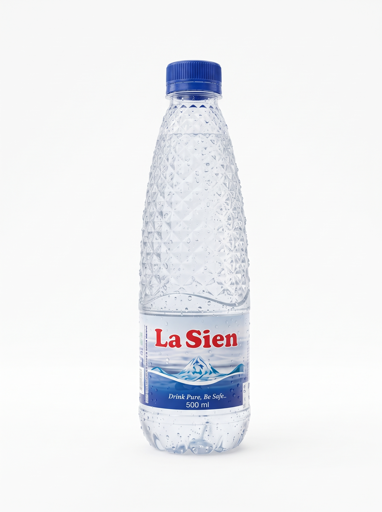
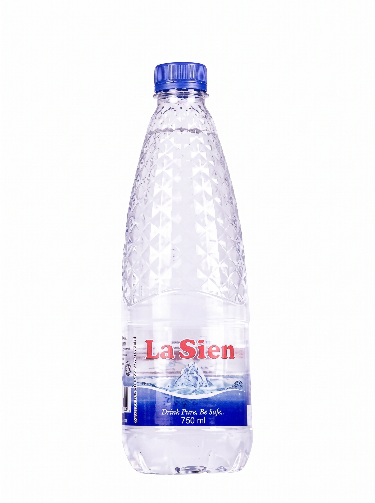
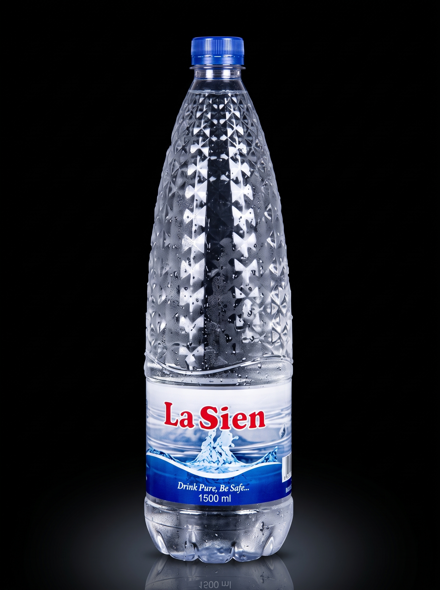

50clEVERYDAY ESSENTIAL
Premium Bottled Water
Perfectly sized for lunch packs, outings and outdoor occasions.
PREMIUM BOTTLED WATER · NIGERIA
Clean, refreshing bottled water made with care for homes, businesses, events and everyday life.

La Sien Bottling Company Limited bottles and distributes premium bottled water in Nigeria to meet the needs of our customers. We have been providing clean environmentally safe water since 2010 and we intend to expand to produce flavored water and fruit drinks.
Read our story ↗OUR WATER
Three practical sizes for everyday moments, from quick refreshment to sharing.

50clEVERYDAY ESSENTIAL
Perfectly sized for lunch packs, outings and outdoor occasions.

75clON THE GO
A refreshing bottle that fits conveniently into most car cup holders.

150clFOR SHARING
Designed for family tables, shared moments and larger occasions.

OUR STORY
La Sien began in 2010 from a concern that safe drinking water was not readily available to enough people in Rivers State. That concern became a company focused on producing clean, dependable bottled water.
The business expanded and restructured from 2014, strengthening its facility and distribution network while keeping quality at the centre of its work.
WHY LA SIEN
La Sien states that its flagship bottled water is filtered and ozonized as part of its production process.
An enclosed production system is used from bottle blowing through final packaging to reduce human interference.
The company identifies quality assurance, health and safety as important parts of its operating standards.
La Sien says its premium bottled water is available in Rivers, Bayelsa and Cross River, with distribution extending across the South-South and South-East.
Speak with the team about products, distribution and partnerships.